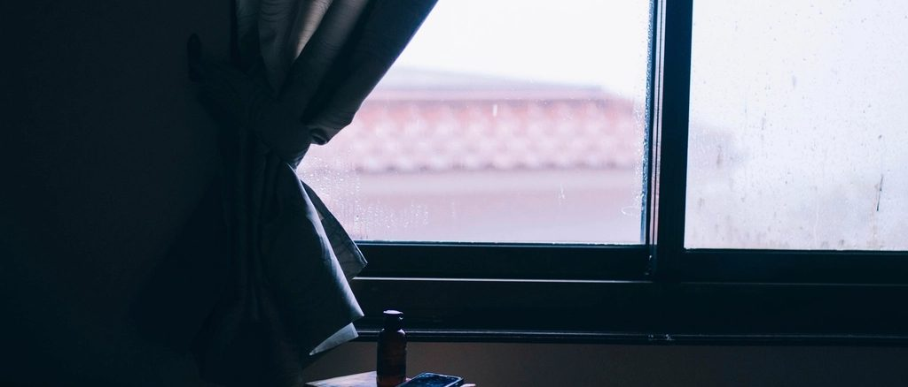

Faith
Why are you so worried?
For most of a year after the loss I answered the question “do you have kids?” in whatever way I could. Then in the autumn of 2017 I wrote God a letter, and a couple of days later everything changed.

For most of a year after we lost our baby, something felt missing that I could not name. It was a family. I had always known God would make me a mother someday, and seeing women walking around with a pregnant belly made me sad in a way I could not explain to anybody. I wanted a life inside me again. I wanted to be a mother so badly.
I was embarrassed to say the word out loud. Social media already knew. Our families already knew. So I did not say miscarriage; the word felt awkward, and it made me the kind of woman who had that, and people were not going to ask. When somebody asked whether we had children, I would say we just had a miscarriage and our baby is in Heaven. As the years went on I stopped softening it. When people asked, I said no.
The letter
In the early autumn of 2017 I wrote God a letter. A real one, on paper, at the kitchen table. I told Him why I wanted a baby. I hinted that I wanted a little girl, because I wanted her to have a loving and healthy relationship with her daddy — something I never had growing up, and wanted to give her.
A couple of days later we found out we were pregnant. We were full of emotions and all the what-ifs. We both felt from the beginning that we were carrying a girl.
27 September
On the 27th of September 2017 I had a dream. God sent an angel to tell me something, and I still see her perfectly: a woman with long wavy brown hair, dressed in white, with a button nose and glasses. The background was plain, no scenery at all, except another angel back at a desk.
She looked straight into my eyes and said, in a soothing voice, “why are you so worried about your pregnancy?” My own answer, immediately, was don’t you know what happened to me a year ago? And I knew, sitting in that dream, that everything was going to be alright and that God was with me. I tried to speak to her and could not. We just looked at each other.
I woke up and wanted to tell my husband straight away. He never doubted me, not once, not for a second.
I did the arithmetic many times that week, because I could not leave it alone. When the angel spoke to me I was nine weeks and three days pregnant. With Khai, I was nine weeks and three days when he stopped growing, and I did not know for another three weeks. The same number, to the day. God knows us so well from the inside that He would not have us sit in that fear, not with a daughter on the way.
What people said
Every woman I told about the loss immediately said something cautionary about the new pregnancy. Be careful this time. Don’t lift anything. Sit on the couch for nine months and watch television. And one of them said — make sure your dream was an angel, because the Bible talks about Satan appearing as an angel of light.
I did the exact opposite. I kept lifting weights. I worked out through the whole pregnancy, I told strangers about the angel because it comforted me, and I had no fear at all. The pregnancy went as smoothly as two people tying a knot. I know that is easy to say now, with two healthy children asleep upstairs. I did not feel fearless. I was choosing, every single day, to believe what I had been shown.
And this is the verse that held me through all of it:
“For God hath not given us the spirit of fear; but of power, and of love, and of a sound mind.”
2 Timothy 1:7
“Now the Lord is that Spirit: and where the Spirit of the Lord [is], there [is] liberty.” 2 Corinthians 3:17
What I want to keep from that autumn is this: the visit that undid me was not a lack of faith. It was the fact that nobody could see what was coming, and so everyone got louder about the things they could see. Fear dressed up as advice. If you are pregnant and frightened, you are allowed to say so. You are allowed to be told to be careful. What you are not allowed to do is let the loudest voice in the room become the voice in your own head.